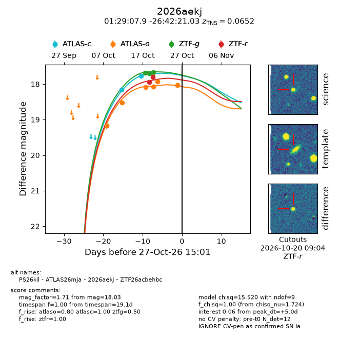
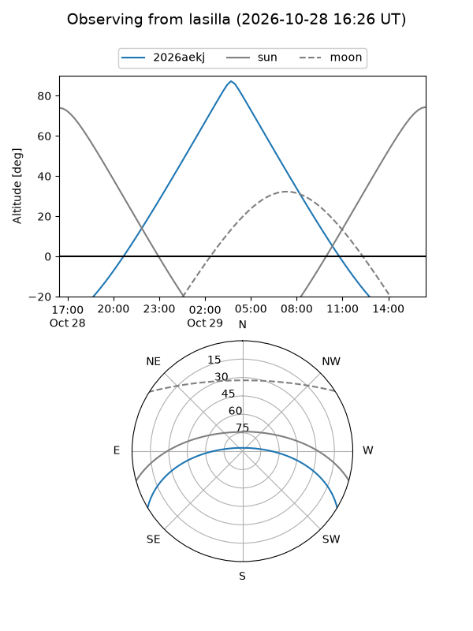
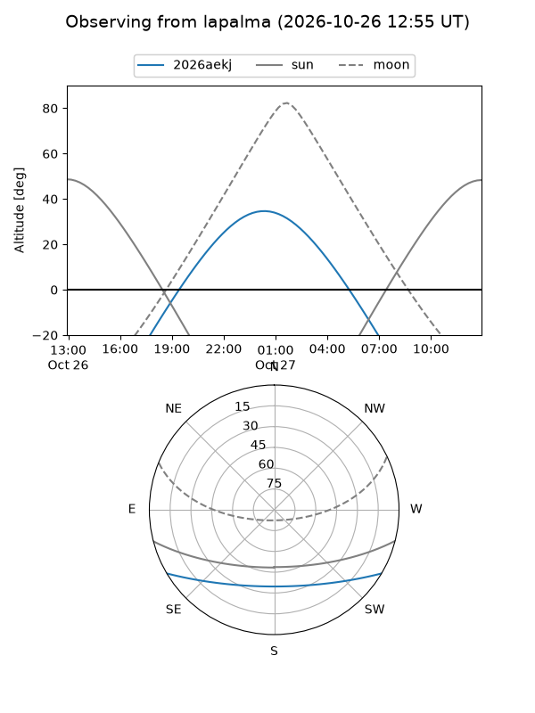
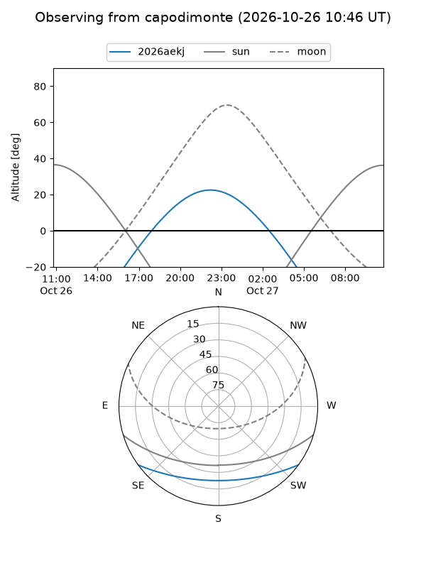
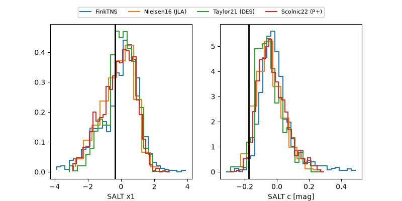

2026aekj
Target 2026aekj at 2026-10-27 15:02
Aliases and brokers:
FINK-ZTF: ztf.fink-portal.org/ZTF26acbehbc
Lasair-ZTF: lasair-ztf.lsst.ac.uk/objects/ZTF26acbehbc
ALeRCE-ZTF: alerce.online/object/ZTF26acbehbc
YSE-PZ: ziggy.ucolick.org/yse/transient_detail/2026aekj
TNS name: wis-tns.org/object/2026aekj
Direct TNS query: direct search
alt names
ZTF26acbehbc (ztf,fink_ztf)
2026aekj (tns,yse)
ATLAS26mja (atlas)
PS26kil (panstarrs)
Coordinates:
equatorial (ra, dec) = 22.2829,-26.70584
equatorial (HMS+DMS) = 01:29:07.90,-26:42:21.03
galactic (l, b) = (212.1973,-81.58885)
Flags:
TNS type: SN Ia
TNS redshift: 0.0652
peak dt: +5.0
Photometry:
last atlasc=17.77, atlaso=18.03, ztfg=17.68, ztfr=17.81
2 atlasc, 6 atlaso, 3 ztfg, 2 ztfr detections
Lightcurve

Visibility



Additional plots
